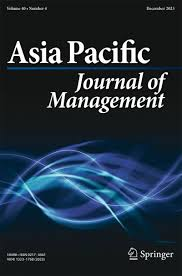
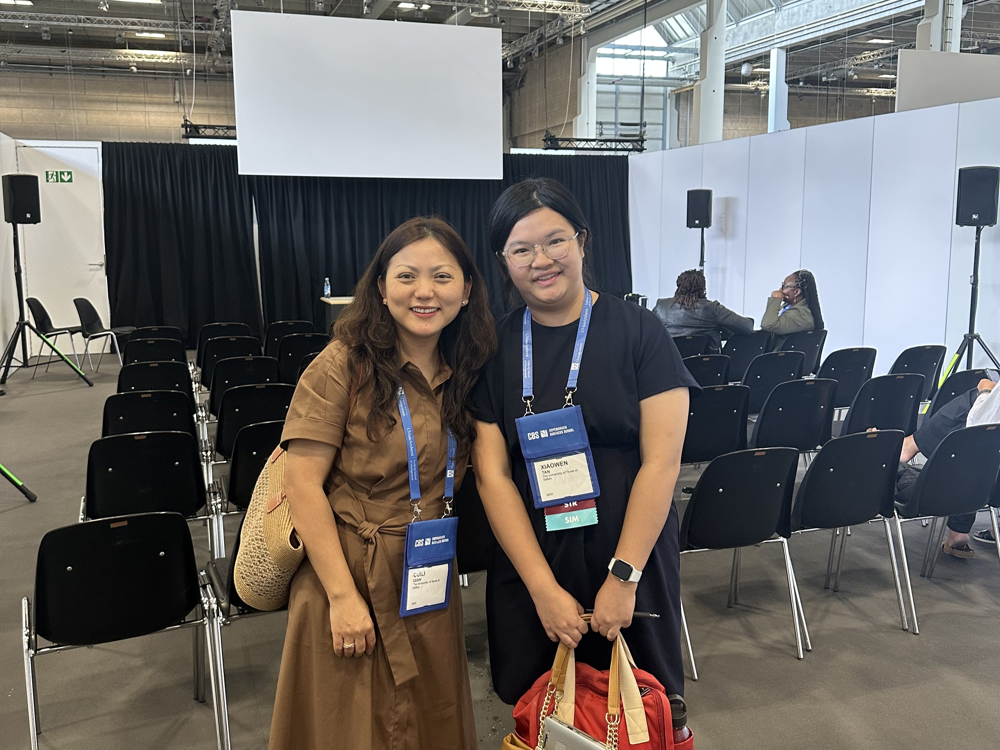
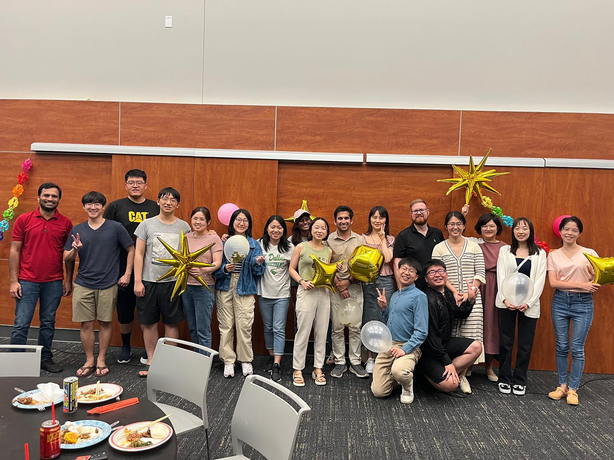

Ad hoc reviewer, Asia Pacific Journal of Management2025–2026
Voluntary reviewer, Academy of Management Annual Conference2023–2025
Voluntary reviewer, Strategic Management Society Annual Conference2024–2025

Conference Service
Session Moderator, Academy of Management Annual MeetingAug 2025

University Service
Vice President, JSOM PhD Social Club2024–present
The University of Texas at Dallas
Serving as Vice President of the JSOM Ph.D. Social Club, where I lead promotion and event organization to help fellow Ph.D. students unwind, connect, and balance the demands of research life.

Moderator, OSIM PhD Student Brownbag Series, The University of Texas at Dallas2024–2025